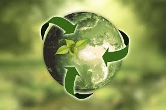
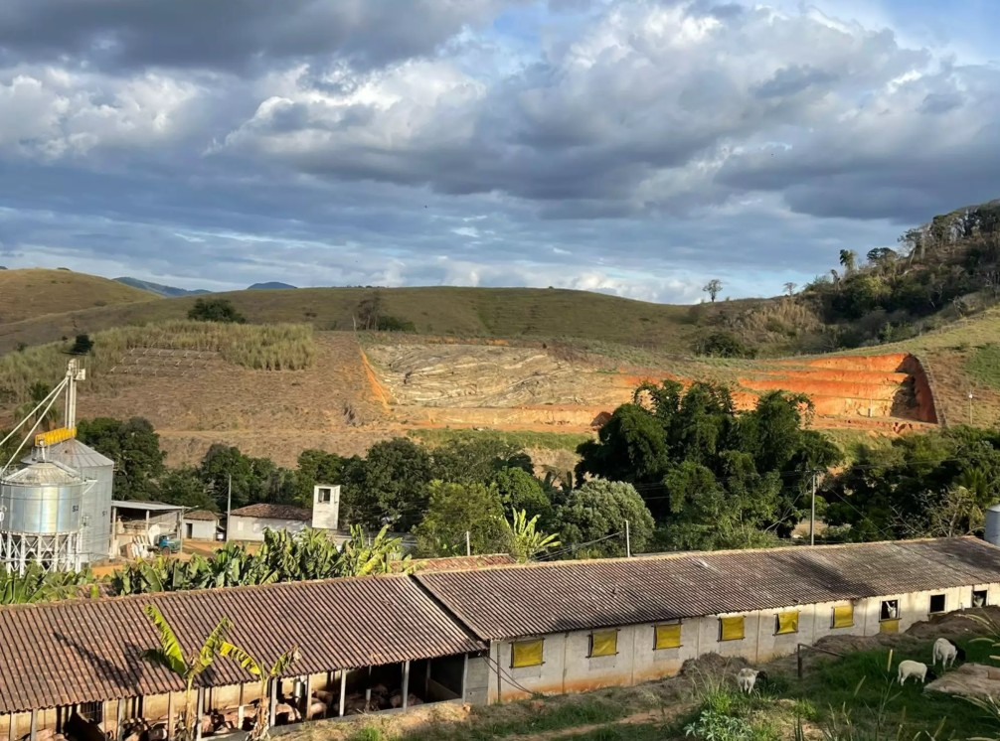
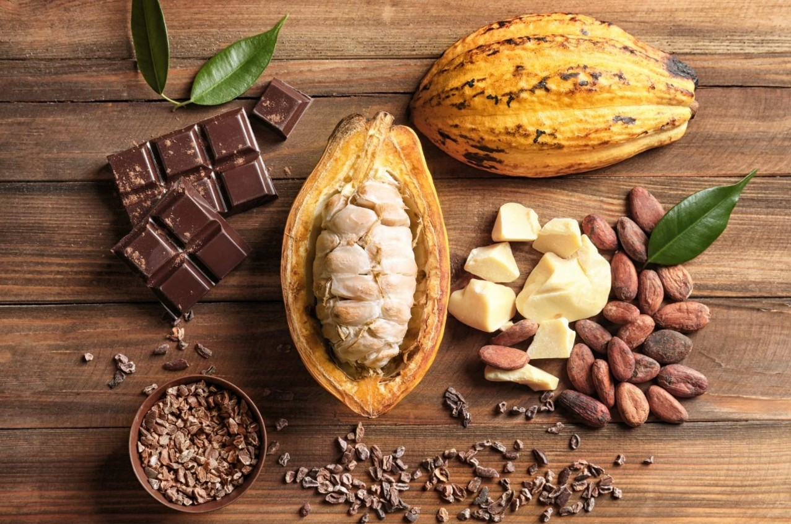
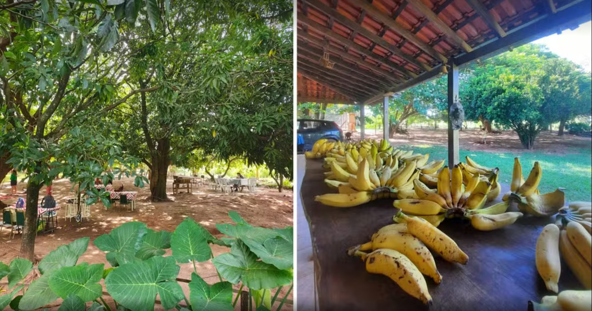
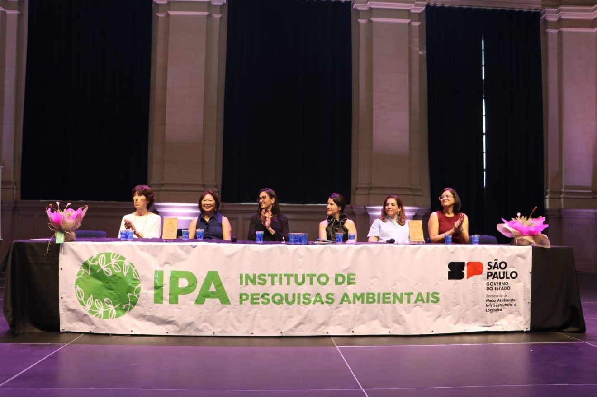

Notícias sobre Sustentabilidade

Carcinicultura e seus desafios para sustentabilidade em áreas estuarinas no Nordeste
A carcinicultura é a criação de camarões em ambientes controlados para fins comerciais,
constituindo um segmento da aquicultura voltado para...
Matéria Completa

Frigorífico aposta em sustentabilidade para atrair a geração Z
Empreendimento investe em produção sustentável, rastreabilidade
e bem-estar animal, com projeção de crescimento sustentável e legado...
Matéria Completa

Cacau promove a sustentabilidade e a diversificação agrícola em SP
Programa Cacau SP oferece suporte aos produtores interessados
no cultivo do fruto, com informações sobre produção e modelos de plantio...
Matéria Completa

Com práticas de vida no campo, agrofloresta une música, educação e sustentabilidade
no interior de SP: 'Resposta da terra', diz frequentador
Propriedade criada como alternativa para gerar renda na zona rural de Guapiaçu (SP)
une cultivo agroecológico, arte e sustentabilidade.
Matéria Completa

Mulheres na Ciência: Evento do IPA traz pesquisas inéditas para o futuro do meio ambiente
Pesquisadoras e líderes debatem inovações e desafios para a sustentabilidade ambiental em
São Paulo. São Paulo, 27 de março de 2025...
Matéria Completa